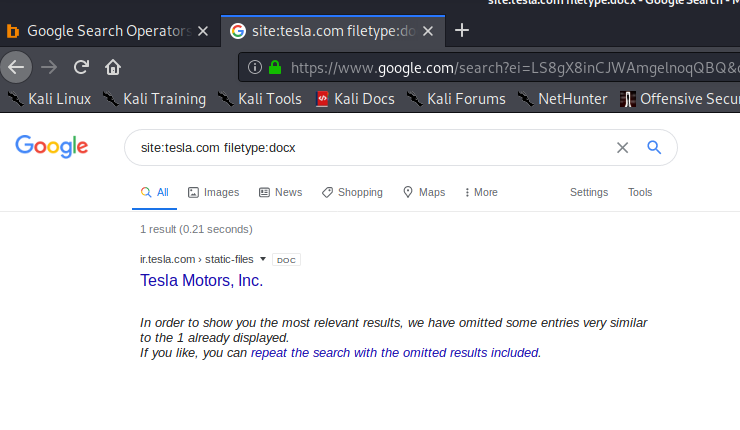

site:tesla.com -www:
due to this it will search only having tesla.com
-www means wont give u www wale reuslts
site:tesla.com -www -ir :due to this both results having www and ir will not be displayed

filetype lets to seach for only that particularfile type
this helps us a lot